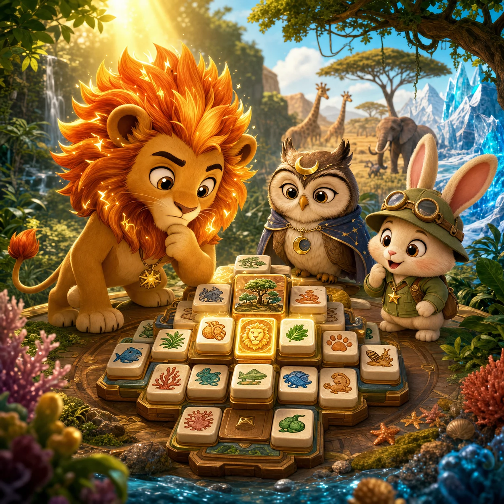

Mahjong solitaire puzzle
Animal Habitat Mahjong
Match two free tiles to open every animal habitat.

Mahjong solitaire puzzle
Match two free tiles to open every animal habitat.
Animal Habitat Mahjong is a free bilingual Kids mahjong-solitaire puzzle with 30 saved boards and six Habitat Finales. Players match identical animal or habitat tiles only when no higher tile covers them and at least one horizontal side is open. The campaign begins with that classic rule, then introduces diamond-key seals, starred family rescues, alternating A/B patrol trails, and mixed ranger trials. Ten layered structures keep the board geometry changing. There is no countdown failure, account, purchase, ranking, advertising request, or random reward.
The Forest Ranger Archive keeps one illustrated tile album for four connected reserves: Forest Canopy, Safari Trail, Coral Shelf, and Arctic Glow. A seasonal storm has folded the album pages into layered stacks. Animal portraits, shells, leaves, coral, snow marks, and trail symbols now cover one another, and the paths between habitats cannot be recorded until every pair is returned to its proper page.
The player is the archive's junior tile ranger. Matching a free pair removes one folded layer and reveals the pictures beneath it. Diamond-marked animals carry keys that open blue trail seals. Starred pictures represent separated animal families that must be found as matching pairs. Patrol Trail boards alternate the available route between groups A and B after each match, asking the ranger to inspect a different part of the layered board. Clearing Board 30 restores the final Coral Shelf page and completes all six Habitat Finales.
Boards 1-5: Open Path. Grid, diamond, terrace, bridge, and stacked structures teach coverage and open sides. Board 5 is the first Habitat Finale.
Boards 6-10: Trail Seal. A visible diamond-key pair must clear before two marked inner pairs become available. Later layouts place the key above wider and deeper stacks.
Boards 11-15: Family Rescue. Two starred matching families are distributed through ocean boards. Board 15 deliberately begins with no matching free pair, teaching the truthful Shuffle recovery before its finale can be cleared.
Boards 16-20: Patrol Trail. Arctic boards alternate available matching groups between route A and route B after each success. Pyramid and three-layer sanctuary shapes make the changing route visible in different layers.
Boards 21-25: Ranger Trial. Seal and rescue objectives share the same board. The key opens protected routes while the two starred families remain visible goals beneath later layers.
Boards 26-30: Grand Reserve. Tower, pyramid, and sanctuary layouts combine seals, rescues, and alternating patrol routes. Board 30 contains twelve pairs over three layers and ends the campaign without creating a Board 31.
The campaign is designed around changing decisions rather than simply adding tiles or making the clock faster. The first five boards establish a rule that can be understood by looking at the stack. Seals add dependency, rescues add visible subgoals, and Patrol Trail changes which set is currently available after a match. Mixed boards ask the player to coordinate those ideas, but never shrink the tiles, hide their pictures, or impose a loss timer. Each five-board chapter ends with a mechanically representative finale.
The board, HUD, feedback, and assist controls use one fixed logical layout that scales uniformly on phones, tablets, desktop screens, and short landscape views. Touch, mouse, and keyboard all call the same match validator. Result is contained inside the play screen, and the Kids route creates no advertising reserve. Unlike Animal Star Memory, every picture remains visible; unlike flat tile-clearing games, the main question is whether a tile is physically accessible and what its removal uncovers.
Animal Habitat Mahjong may support calm practice with visual scanning, spatial planning, focus, cause and effect, and revising a decision. An adult can ask which pair would uncover the most tiles or why a sealed picture is not available yet. Scores and the Skill Report describe only this local play session; they are not an intelligence test, school grade, diagnosis, or comparison with another child. Progress stays in the current browser and may be removed when site storage is cleared. No child profile is required, and the Kids page requests no advertising.